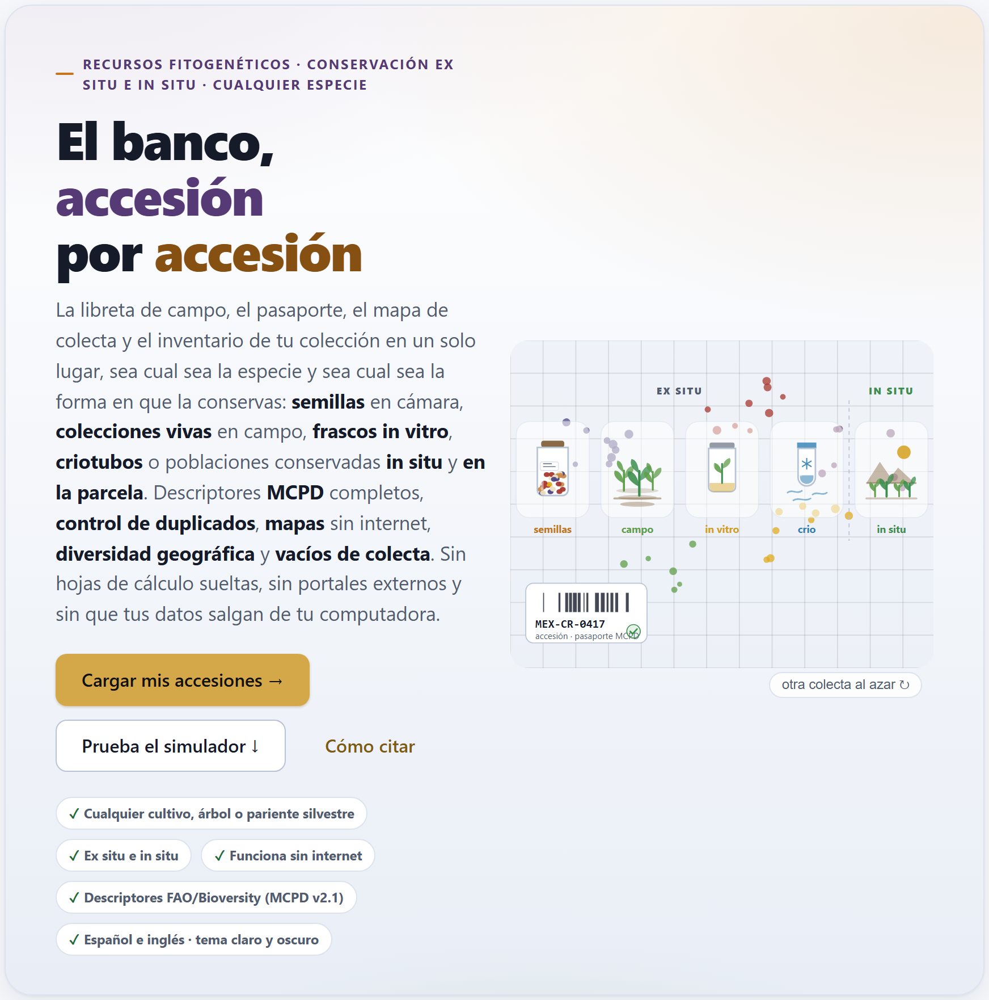
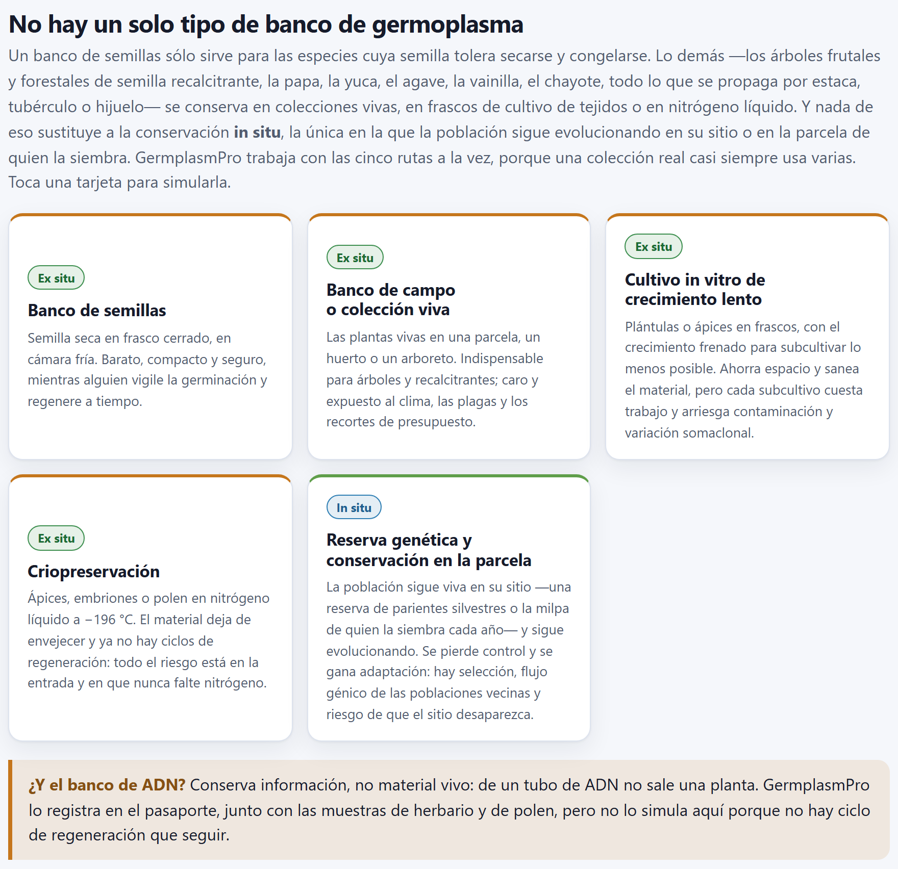
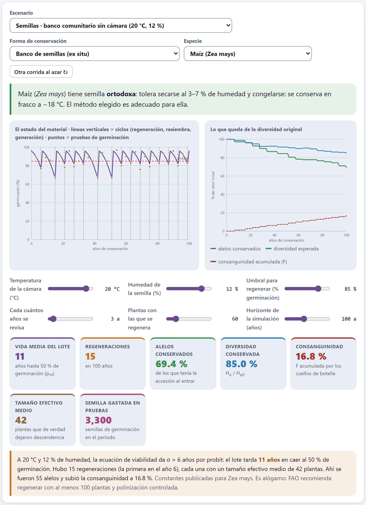
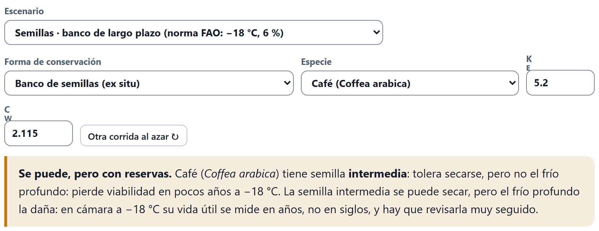
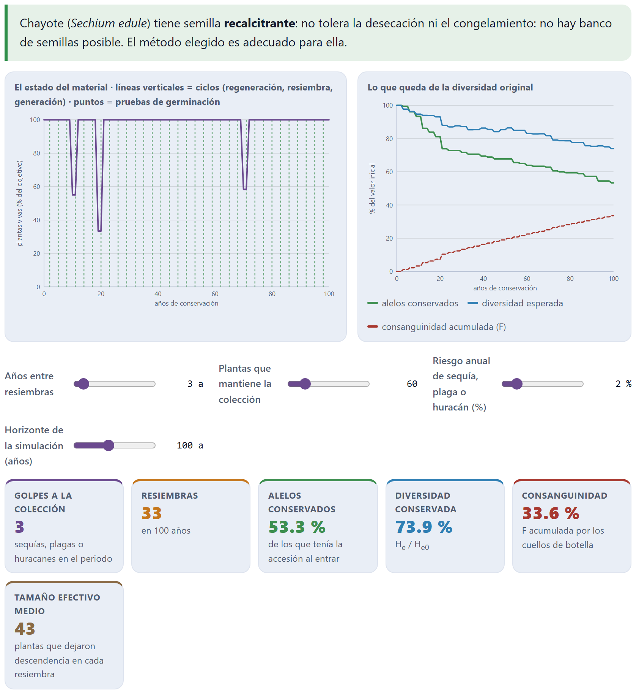
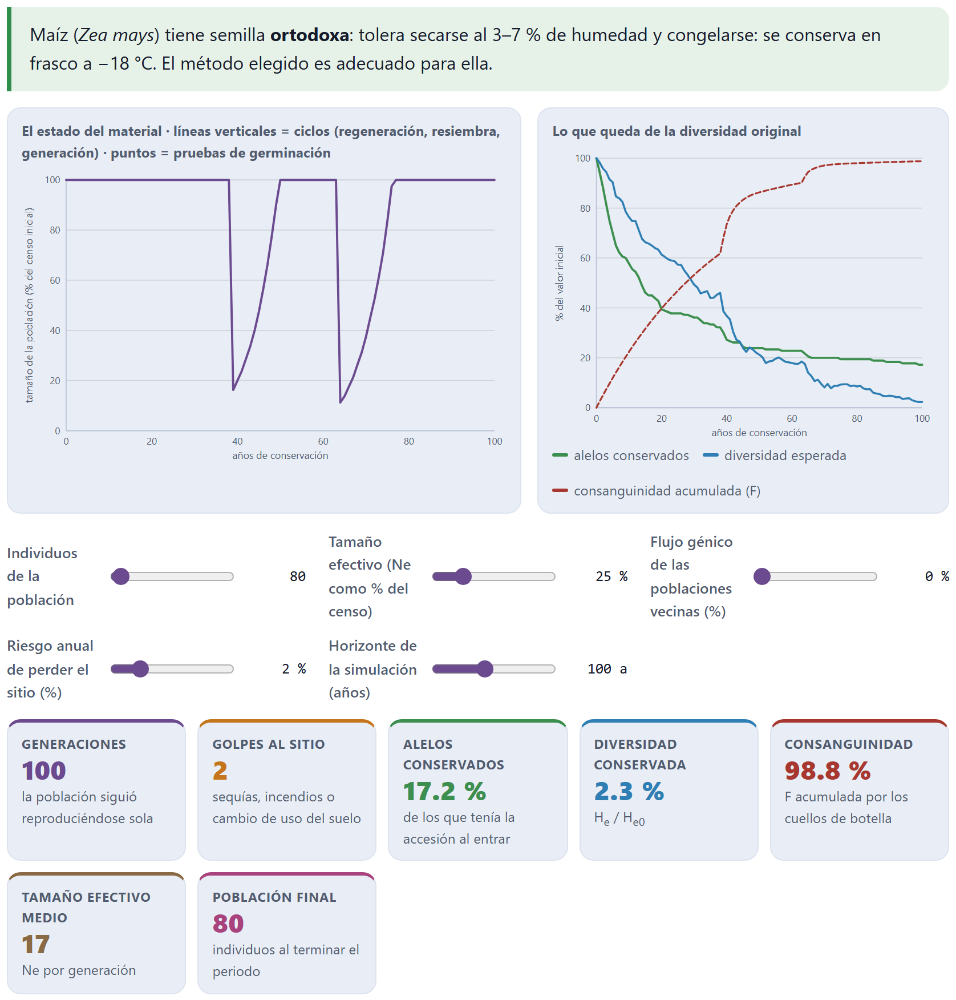
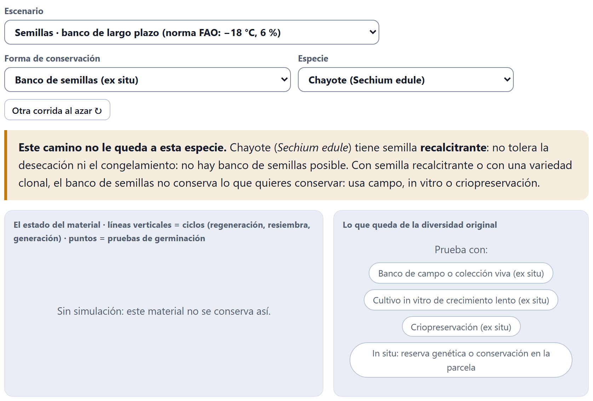
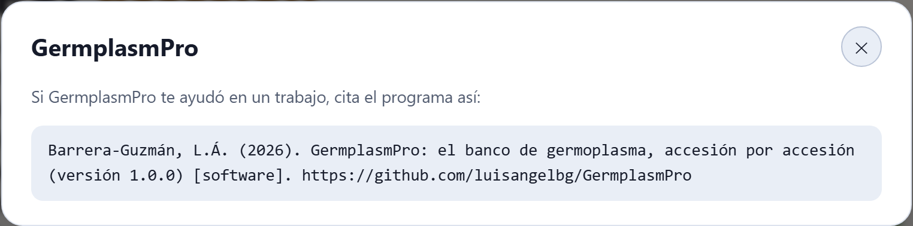

La primera pantalla de la app no necesita datos. Presenta los cinco tipos de banco —cuatro ex situ y uno in situ—, dice qué comportamiento de semilla admite cada uno y trae un simulador que sigue a una accesión durante décadas por la ruta que elijas, con dos relojes en marcha: el del material y el de su diversidad genética. Es el lugar para entender por qué una especie se conserva como se conserva antes de cargar la colección.
Al abrir index.html aparece el Bloque 1. Arriba, en letras pequeñas, el ámbito del programa —Recursos fitogenéticos · conservación ex situ e in situ · cualquier especie— y, en grande, su lema: «El banco, accesión por accesión». El párrafo de debajo resume la promesa: la libreta de campo, el pasaporte, el mapa de colecta y el inventario de la colección en un solo lugar, sea cual sea la especie y la forma de conservarla, sin hojas de cálculo sueltas, sin portales externos y sin que los datos salgan de la computadora.

Tres botones dan la entrada. Cargar mis accesiones → lleva al Bloque 2, donde empieza el trabajo con tu colección; Prueba el simulador ↓ baja al simulador de este bloque (apartado 1.4), y Cómo citar abre el cuadro con la cita del programa (apartado 1.8). Debajo, cinco sellos resumen lo que el programa garantiza: Cualquier cultivo, árbol o pariente silvestre; Ex situ e in situ; Funciona sin internet; Descriptores FAO/Bioversity (MCPD v2.1), y Español e inglés · tema claro y oscuro.
La ilustración está dibujada por el propio programa. Las cuatro rutas ex situ van a la izquierda de una línea punteada y la in situ, a la derecha; los puntos de colecta se agrupan en cinco núcleos, como se agrupan de verdad las colectas a lo largo de caminos y valles. La etiqueta de abajo (MEX-CR-0417 · accesión · pasaporte MCPD) es decorativa: no corresponde a ninguna accesión de la colección de ejemplo. El botón otra colecta al azar ↻ vuelve a dibujar la escena con otros puntos.
Es el único bloque que no usa el pasaporte. Nada de lo que hagas aquí se guarda, cambia la colección o entra en el informe del Bloque 10. Por eso conviene usarlo para pensar: cambiar un control a la vez y ver qué le pasa a la accesión.
La sección No hay un solo tipo de banco de germoplasma empieza por lo esencial: un banco de semillas sólo sirve para las especies cuya semilla tolera secarse y congelarse. Los árboles de semilla recalcitrante y todo lo que se propaga por estaca, tubérculo o hijuelo —la papa, la yuca, el agave, la vainilla, el chayote— se conservan vivos, en frascos o en nitrógeno líquido, y nada de eso sustituye a la conservación in situ. Cinco tarjetas presentan las rutas; cada una lleva su sello Ex situ o In situ.

| Tarjeta | Qué es | Su punto débil |
|---|---|---|
| Banco de semillas ex situ | Semilla seca en frasco cerrado, en cámara fría. Barato, compacto y seguro. | Sólo dura si alguien vigila la germinación y regenera a tiempo. |
| Banco de campo o colección viva ex situ | Las plantas vivas en una parcela, un huerto o un arboreto. Indispensable para árboles y especies recalcitrantes. | Caro y expuesto al clima, a las plagas y a los recortes de presupuesto. |
| Cultivo in vitro de crecimiento lento ex situ | Plántulas o ápices en frascos, con el crecimiento frenado para subcultivar lo menos posible. Ahorra espacio y sanea el material. | Cada subcultivo cuesta trabajo y arriesga contaminación y variación somaclonal. |
| Criopreservación ex situ | Ápices, embriones o polen en nitrógeno líquido a −196 °C. El material deja de envejecer y ya no hay ciclos de regeneración. | Todo el riesgo está en la entrada (cuánto rebrota al descongelar) y en que nunca falte nitrógeno. |
| Reserva genética y conservación en la parcela in situ | La población sigue viva en su sitio —una reserva de parientes silvestres o la milpa de quien la siembra cada año— y sigue evolucionando. | Se pierde control: hay selección, flujo génico de las poblaciones vecinas y riesgo de que el sitio desaparezca. |
Las dos caras de lo in situ —la reserva genética de parientes silvestres y la conservación en finca, en la parcela de familias custodias— comparten tarjeta y modelo en el simulador, porque las mueve la misma dinámica: una población que se reproduce sola, con deriva, flujo génico y riesgo de perder el sitio. En el pasaporte, en cambio, se registran por separado (capítulo 2), y por eso el retrato de la colección de ejemplo cuenta seis rutas (figura I.3).
Al tocar una tarjeta, la app elige el primer escenario listo de esa ruta (tabla 1.3), lo carga en el simulador y baja hasta él: Banco de semillas abre la norma FAO con maíz; Banco de campo, el chayote; Cultivo in vitro y Criopreservación, la papa, e In situ, el maíz criollo en la milpa.
Bajo las tarjetas, un recuadro lo aclara: el banco de ADN conserva información, no material vivo —de un tubo de ADN no sale una planta—. GermplasmPro lo registra en el pasaporte, junto con las muestras de herbario y de polen, pero no lo simula, porque no hay ciclo de regeneración que seguir. Por eso la introducción habla de «cinco tipos de banco»: el sexto existe, pero sólo como registro.
Qué ruta le conviene a una especie depende, antes que nada, de cómo se comporta su semilla al secarse y al enfriarse, y de si la variedad que se quiere conservar se reproduce por semilla o es un clon. La app distingue cuatro comportamientos, con la misma frase que muestra en el veredicto del simulador:
| Comportamiento | Lo que dice la app |
|---|---|
| Ortodoxa | Tolera secarse al 3–7 % de humedad y congelarse: se conserva en frasco a −18 °C. |
| Intermedia | Tolera secarse, pero no el frío profundo: pierde viabilidad en pocos años a −18 °C. |
| Recalcitrante | No tolera la desecación ni el congelamiento: no hay banco de semillas posible. |
| De propagación vegetativa | Su semilla no reproduce el genotipo que se quiere conservar, porque la variedad es un clon. |
Con esos cuatro comportamientos la app decide, para cada pareja de especie y ruta, si el camino le queda, si se puede con reservas o si no le queda. La tabla 1.1 reúne esas decisiones; son las que producen los veredictos del apartado 1.7.
| Comportamiento | Semillas | Campo | In vitro | Crio | In situ |
|---|---|---|---|---|---|
| Ortodoxa | ✓ | ✓ | ! | ✓ | ✓ |
| Intermedia | ! | ✓ | ✓ | ✓ | ✓ |
| Recalcitrante | ✗ | ✓ | ✓ | ✓ | ✓ |
| De propagación vegetativa | ✗ | ✓ | ✓ | ✓ | ✓ |
Las dos reservas tienen su razón. La semilla intermedia se puede secar, pero en cámara a −18 °C su vida útil se mide en años, no en siglos, y hay que revisarla muy seguido. Y para una especie de semilla ortodoxa el frasco in vitro funciona, pero es un gasto innecesario: el banco de semillas hace el mismo trabajo por una fracción del costo.
El selector Especie trae quince entradas: catorce especies que ilustran los cuatro comportamientos y una entrada genérica para la tuya. No es un catálogo cerrado de lo que la app puede manejar —el pasaporte acepta cualquier taxón—, sino casos reales para que el simulador tenga con qué trabajar. Cada especie lleva una nota que aparece al pie de los resultados.
| Especie | Semilla | La nota de la app, en breve |
|---|---|---|
| Otra especie (elige su comportamiento) | la que elijas | Declara cómo se comporta tu especie y, si va a banco de semillas, pon sus constantes de viabilidad antes de decidir con los años que salgan. |
| Maíz (Zea mays) | ortodoxa | Constantes publicadas. Alógamo: regenerar con al menos 100 plantas y polinización controlada. |
| Frijol (Phaseolus vulgaris) | ortodoxa | Autógamo: bastan menos plantas, pero conviene cosechar por planta. |
| Calabaza (Cucurbita pepo) | ortodoxa | Alógama, con polinizadores específicos: aislamiento o polinización manual. |
| Chile (Capsicum annuum) | ortodoxa | Autógamo con cruzamiento natural apreciable: regenerar bajo malla antiáfidos. |
| Trigo (Triticum aestivum) | ortodoxa | El caso más cómodo para un banco de semillas. |
| Café (Coffea arabica) | intermedia | El congelamiento la mata: se conserva en campo, in vitro o criopreservado. |
| Aguacate (Persea americana) | recalcitrante | Colección viva en campo; el germoplasma élite, como clon injertado. |
| Cacao (Theobroma cacao) | recalcitrante | Colecciones de campo con respaldo in vitro y ápices criopreservados. |
| Chayote (Sechium edule) | recalcitrante | Germina dentro del fruto: banco de campo o in vitro, con resiembra periódica. |
| Encino (Quercus spp.) | recalcitrante | La conservación empieza in situ, en rodales semilleros y reservas. |
| Papa (Solanum tuberosum) | vegetativa | La variedad es un clon: in vitro y criopreservada, con respaldo en campo. |
| Yuca (Manihot esculenta) | vegetativa | Se propaga por estacas: campo e in vitro, con la crio de respaldo. |
| Agave (Agave spp.) | vegetativa | Cultivares por hijuelos; muchas poblaciones silvestres sólo in situ. |
| Vainilla (Vanilla planifolia) | vegetativa | Base genética estrecha: in vitro, campo bajo sombra e in situ de sus parientes. |
Sólo con Otra especie (elige su comportamiento) aparece el selector Su semilla es, con las cuatro opciones de arriba; en las demás especies el comportamiento viene dado. Las especies alógamas y autógamas no se distinguen en el cálculo de la deriva —en todas las de reproducción sexual se sortean dos copias por planta—; la diferencia se queda en la nota, como consejo de manejo para la regeneración.
La sección Pruébalo: la vida de una accesión, por la ruta que elijas sigue a una accesión durante décadas con dos relojes en marcha, los mismos de la cuarta idea de la introducción (I.3): el del material —la germinación del lote, las plantas vivas de la parcela, los frascos del laboratorio, los explantes que rebrotan al descongelar o el tamaño de la población en su sitio— y el de la integridad genética, porque cada cuello de botella vuelve a sortear las frecuencias de los alelos y se lleva los raros.

| Control | Para qué sirve |
|---|---|
| Escenario | Carga de un golpe uno de los catorce escenarios listos (tabla 1.3): ruta, especie y valores de los deslizadores. |
| Forma de conservación | La ruta, en dos grupos: Ex situ (las cuatro primeras) e In situ. Cambiarla cambia los deslizadores. |
| Especie | Una de las quince entradas de la tabla 1.2. |
| Su semilla es | Sólo con Otra especie: el comportamiento de tu semilla. |
| KE y CW | Sólo en banco de semillas y con una especie cuyas constantes de viabilidad son editables (todas las de semilla salvo el maíz). Ver el apartado 1.5. |
| Otra corrida al azar ↻ | Repite la simulación con otra semilla del generador de números al azar: las regeneraciones, las pruebas, los golpes del clima y la deriva cambian; los parámetros, no. |
Debajo de las gráficas van los deslizadores de la ruta, distintos en cada una (apartados 1.5 y 1.6); todas comparten el último, Horizonte de la simulación (años), de 30 a 200 años. Cada movimiento vuelve a correr la simulación al instante.
| Escenario | Alelos | He | F | Y además |
|---|---|---|---|---|
| Semillas · banco de largo plazo (norma FAO: −18 °C, 6 %) | 100.0 % | 100.0 % | 0.0 % | p₅₀ 883 años; ninguna regeneración |
| Semillas · cámara de mediano plazo (5 °C, 8 %) | 98.3 % | 96.2 % | 1.9 % | trigo; p₅₀ 117 años; 3 regeneraciones en 200 años |
| Semillas · banco comunitario sin cámara (20 °C, 12 %) | 69.4 % | 85.0 % | 16.8 % | p₅₀ 11 años; 15 regeneraciones |
| Semillas · el mismo banco comunitario sin probar germinación en 15 años | 59.4 % | 79.2 % | 20.9 % | 6 regeneraciones con Ne medio de 14 |
| Semillas · buena cámara, pero se regenera con 25 plantas | 80.0 % | 91.8 % | 7.6 % | 3 regeneraciones con Ne medio de 19 |
| Campo · chayote, recalcitrante, resiembra cada 3 años | 53.3 % | 73.9 % | 33.6 % | 33 resiembras, 3 golpes |
| Campo · colección de árboles de cacao, renovada cada 25 años | 46.7 % | 74.3 % | 28.7 % | 4 resiembras, 3 golpes |
| In vitro · papa en crecimiento lento, subcultivo cada 12 meses | 17.8 % | 4.5 % | 72.8 % | 50 subcultivos; fidelidad 77.8 % |
| In vitro · la misma papa, pero subcultivada cada 3 meses | 16.7 % | 0.0 % | 99.4 % | 200 subcultivos; fidelidad 36.7 % |
| Crio · ápices de papa en nitrógeno líquido | 100.0 % | 98.2 % | 0.5 % | 100 de 200 explantes recuperados |
| Crio · la misma papa, pero con sólo 30 explantes congelados | 73.9 % | 94.2 % | 4.2 % | 12 de 30 recuperados |
| In situ · maíz criollo en la milpa (on-farm) | 100.0 % | 97.1 % | 4.4 % | Ne medio 136; 3 golpes |
| In situ · la misma milpa, aislada y con poca semilla (sin flujo génico) | 17.2 % | 2.3 % | 98.8 % | Ne medio 17; 2 golpes |
| In situ · encinos de una reserva de parientes silvestres | 100.0 % | 99.7 % | 0.3 % | Ne medio 777; 1 golpe |
Los escenarios vienen en pares a propósito: el mismo material con una sola cosa cambiada. Compara el banco comunitario que prueba cada 3 años con el que deja pasar 15; la cámara buena que regenera con 100 plantas con la que regenera con 25; la papa subcultivada cada año con la subcultivada cada tres meses; los 200 explantes con los 30; la milpa conectada con la aislada. En cada par, lo que se pierde no lo explica el tiempo, sino el manejo.
La accesión simulada empieza con 30 loci de seis alelos cada uno, con frecuencias que van de lo común a lo raro (alrededor de 0.45, 0.22, 0.15, 0.09, 0.06 y 0.03, con una pequeña variación al azar entre loci). Cada vez que pasa por un cuello de botella, la app vuelve a sortear las frecuencias con 2Ne copias si la reproducción es sexual, o con Ne si el material es clonal. Un alelo con frecuencia 0.03 tiene buena probabilidad de no salir en un sorteo pequeño, y una vez perdido no vuelve: por eso los alelos se pierden antes y más rápido que la diversidad esperada, que pesa poco los raros. La consanguinidad crece con cada ciclo:
De ahí la regla del banco: pocos ciclos y con muchos individuos. In situ ocurre lo mismo cada generación, pero el flujo génico de las poblaciones vecinas devuelve parte de lo perdido (apartado 1.6).
En el banco de semillas el reloj del material es la ecuación de viabilidad de Ellis y Roberts (1980): con la temperatura de la cámara y la humedad de la semilla da cuánto tarda el lote en perder germinación. El simulador la aplica año por año a un lote que entra con 96 % de germinación y 2 500 semillas, y la combina con las pruebas de germinación y las regeneraciones del banco.
La germinación de un lote no cae en línea recta: las semillas mueren a lo largo del tiempo siguiendo una distribución normal, y por eso la ecuación se escribe en probits, unidades de desviación normal. v es la viabilidad en probits después de p días; Ki, la viabilidad inicial del lote en probits (96 % equivale a 1.7507); σ, los días que tarda la viabilidad en bajar un probit. La germinación esperada es Φ(v), la probabilidad normal acumulada.
σ depende de la humedad de la semilla m (% en peso fresco) y de la temperatura t (°C). KE y CW son propias de cada especie; CH = 0.0329 y CQ = 0.000478 describen el efecto de la temperatura y valen para muchas especies ortodoxas, así que la app las deja fijas. Como el término de humedad va en logaritmo, bajar la humedad del 12 al 6 % multiplica σ por 22.115 ≈ 4.3; bajar de 20 a −18 °C lo multiplica por unos 19, y las dos cosas juntas, por 84: de 6 a 505 años por probit.
| Deslizador | Intervalo | Qué controla |
|---|---|---|
| Temperatura de la cámara (°C) | −20 a 25 | t en la ecuación. |
| Humedad de la semilla (%) | 3 a 14 | m en la ecuación, de medio en medio punto. |
| Umbral para regenerar (% germinación) | 50 a 95 | Si una prueba da menos, se regenera. Es la línea roja de la gráfica. |
| Cada cuántos años se revisa | 1 a 30 | Cada cuánto se hace una prueba de germinación, con 100 semillas. |
| Plantas con las que se regenera | 10 a 300 | Las semillas que se siembran en cada regeneración. |
Cada prueba gasta 100 semillas y su resultado lleva el error de muestreo de un conteo real (por eso los puntos no caen exactamente sobre la curva). Se regenera cuando una prueba queda bajo el umbral o cuando las existencias bajan a 400 semillas. En la regeneración germina, al azar, la fracción viva de lo que se siembra; el 90 % de las plantas que nacen deja descendencia —ese es el Ne del ciclo—, y el lote nuevo vuelve a 96 % de germinación con tantas semillas como den esas plantas. Si nacen menos de dos, el lote se pierde.
Los siete recuadros de esta ruta son Vida media del lote (los años hasta 50 % de germinación, p₅₀; si pasan de 999 se escribe >999), Regeneraciones en el horizonte, los tres de la diversidad, Tamaño efectivo medio de las regeneraciones y Semilla gastada en pruebas. La lectura agrega dos advertencias: si se revisa cada 10 años o más, y si se regenera con 30 plantas o menos.
El escenario del banco comunitario sin cámara: maíz a 20 °C con 12 % de humedad, constantes KE = 6.474, CW = 2.115.
| log10 12 = 1.07918 | CW log10 m = 2.115 × 1.07918 = 2.28247 |
| CH t = 0.0329 × 20 = 0.65800 | CQ t² = 0.000478 × 400 = 0.19120 |
| log10 σ = 6.474 − 2.28247 − 0.65800 − 0.19120 = 3.34233 → σ = 103.34233 = 2 199.5 días = 6.02 años por probit | |
| Ki = Φ−1(0.96) = 1.7507 · al 50 %, v = 0 → p₅₀ = 1.7507 × 6.02 = 10.54 años | |
| al 85 %, v = Φ−1(0.85) = 1.0364 → p = (1.7507 − 1.0364) × 6.02 = 4.30 años | |
| a los 3 años: v = 1.7507 − 3/6.02 = 1.2525 → 89.5 % · a los 6 años: v = 0.7544 → 77.5 % | |
La app escribe σ = 6 años por probit y una vida media de 11 años (10.54 redondeado). El lote cruza el umbral de 85 % a los 4.3 años, pero con pruebas cada 3 años la del año 3 aún da cerca de 89 % y es la del año 6 la que lo descubre, con el lote ya en 77.5 %: por eso la primera de las 15 regeneraciones cae en el año 6. Con el mismo cálculo, la norma FAO (−18 °C, 6 %) da log10 σ = 6.474 − 1.6458 + 0.5922 − 0.1549 = 5.2655, σ = 504.6 años por probit y p₅₀ = 1.7507 × 504.6 = 883 años, la cifra del recuadro; en 100 años el lote sólo baja a 94 %.
Sólo el maíz trae constantes publicadas (KE = 6.474, CW = 2.115), y con él las casillas KE y CW no aparecen. En las demás especies que pueden ir a banco de semillas —frijol, calabaza, chile, trigo, café y Otra especie— las casillas aparecen junto al selector de especie y arrancan con los valores del maíz, salvo el café, que empieza con KE = 5.2 para reflejar su vida corta. Es decir: el trigo del escenario de mediano plazo envejece como un maíz hasta que le pongas sus propias constantes.

La sección Qué corre dónde de la portada lo advierte: en cualquier especie que no sea el maíz, KE y CW son un punto de partida. Tómalas de la Seed Information Database de Kew o de la literatura de tu especie antes de usar los años del simulador para programar una regeneración. Lo que sí vale sin ellas es la forma de las respuestas: cuánto gana un lote al bajar la humedad o la temperatura, y cuánto cuesta revisar tarde o regenerar con pocas plantas.
En las rutas sin semilla almacenada no hay ecuación de viabilidad: el reloj del material es otro en cada una. Lo que no cambia es el reloj genético, que corre con la misma deriva del recuadro del apartado 1.4.
Una colección viva no envejece en un frasco: envejece en la parcela. Cada año existe la probabilidad de un golpe —sequía, plaga o huracán— que mata entre el 30 y el 70 % de las plantas; cada cierto número de años la colección se renueva, y en esa resiembra el 75 % de las plantas que quedan deja descendencia. Después la parcela vuelve a su número de plantas.
| Deslizador | Intervalo | Qué controla |
|---|---|---|
| Años entre resiembras | 1 a 30 | Cada cuánto se renueva la parcela. |
| Plantas que mantiene la colección | 10 a 300 | El objetivo de plantas vivas. |
| Riesgo anual de sequía, plaga o huracán (%) | 0 a 15 | La probabilidad de un golpe cada año. |
Los recuadros propios son Golpes a la colección, Resiembras y Tamaño efectivo medio. La gráfica izquierda muestra las plantas vivas como porcentaje del objetivo: cada caída es un golpe, y la línea vuelve a 100 en la siguiente resiembra.

La lectura lo dice sin rodeos: aquí el enemigo no es el tiempo de almacén, sino la frecuencia de la renovación, el tamaño de la parcela y la suerte. El escenario del cacao lo muestra por el otro lado: renovar cada 25 años parece barato, pero tres golpes antes de la primera renovación (en los años 12, 18 y 21) dejan sólo 2 de los 40 árboles para renovarla en el año 24: en ese único paso la colección cae al 46.7 % de sus alelos, y las tres renovaciones siguientes, con 30 árboles, ya no le quitan ninguno. Por eso la app insiste en que un banco de campo siempre necesita un respaldo: in vitro, criopreservación o una segunda localidad.
Aquí el reloj del material es la fidelidad genética. Cada subcultivo deja atrás una parte del material fiel por variación somaclonal (la app supone 0.5 % por pase, un valor fijo que no tiene deslizador) y pierde frascos por contaminación o mal enraizamiento; los que sobreviven se multiplican hasta reponer el número de líneas. Con 50 pases, la fidelidad queda en 0.99550 = 77.8 %; con 200, en 36.7 %.
| Deslizador | Intervalo | Qué controla |
|---|---|---|
| Meses entre subcultivos | 2 a 24 | Cada cuánto se pasa el material a medio fresco. |
| Frascos (líneas) por accesión | 5 a 60 | Cuántas líneas se mantienen. |
| Frascos que se pierden por subcultivo (%) | 0 a 20 | La pérdida por contaminación en cada pase. |
Los recuadros propios son Subcultivos, Fidelidad genética y Frascos manipulados, que mide el trabajo del laboratorio: 1 000 frascos en 50 años con subcultivo anual y 20 líneas, 4 000 si se subcultiva cada tres meses. La lectura recuerda que alargar el intervalo —con menos temperatura, menos luz o medios con osmóticos— es la única forma de bajar ese costo, y que el respaldo definitivo es la criopreservación.
A −196 °C el material no envejece, así que el único cuello de botella es la entrada: de los explantes que se congelan sólo rebrota una parte al descongelar, y esa parte es la accesión que queda. Ese sorteo ocurre una sola vez, en el año 0, y la consanguinidad queda en 1/(2N): con 100 explantes recuperados, 0.5 %; con 12, 4.2 %. Después, lo único que puede pasar es que falle el tanque o el suministro de nitrógeno, y entonces se pierde todo.
| Deslizador | Intervalo | Qué controla |
|---|---|---|
| Explantes que se congelan | 10 a 500 | Cuántos ápices o embriones entran al nitrógeno. |
| Recuperación al descongelar (%) | 5 a 95 | Qué fracción rebrota. |
| Riesgo de fallo del tanque (por mil años) | 0 a 20 | La probabilidad anual, en tanto por mil, de perder el tanque. |
Los recuadros propios son Explantes recuperados, Ciclos de regeneración (siempre 0) y Fallos del tanque. La gráfica del material es una línea plana a la altura de la recuperación, que cae a cero si el tanque falla. Comparar los dos escenarios de papa enseña la lección de la ruta: con 200 explantes y 50 % de recuperación se conservan todos los alelos; con 30 y 40 %, quedan 12 plantas y el 73.9 %.
La población vive en su sitio y se reproduce sola, una generación por año. En cada generación hay deriva con el tamaño efectivo (una fracción del censo) y después llega flujo génico de las poblaciones vecinas, que trae de vuelta las frecuencias del acervo regional. Cada año existe además el riesgo de un golpe al sitio —sequía, incendio, cambio de uso del suelo, que se deje de sembrar la variedad— que se lleva entre el 40 y el 100 % de la población; si sobrevive, se recupera poco a poco, un 15 % por año, hasta su censo habitual.

Con migración m, los dos genes de un individuo vienen de padres residentes con probabilidad (1 − m)², así que la consanguinidad no crece sin freno: se estabiliza en un equilibrio entre deriva y migración. Sin flujo génico (m = 0), la fórmula vuelve a la del recuadro del apartado 1.4.
| Deslizador | Intervalo | Qué controla |
|---|---|---|
| Individuos de la población | 20 a 3 000 | El censo habitual. |
| Tamaño efectivo (Ne como % del censo) | 5 a 100 | Qué parte del censo deja descendencia de verdad. |
| Flujo génico de las poblaciones vecinas (%) | 0 a 30 | m, por generación. |
| Riesgo anual de perder el sitio (%) | 0 a 10 | La probabilidad de un golpe cada año. |
Los recuadros propios son Generaciones, Golpes al sitio, Tamaño efectivo medio y Población final. La lectura cambia según haya o no flujo génico —conservar in situ es conservar una red de poblaciones, no una sola parcela— y cierra siempre con la misma idea: es la única ruta en la que la accesión sigue evolucionando y conserva su conocimiento asociado; lo que se gana en adaptación se pierde en control, y por eso in situ y ex situ son complementarias, no alternativas.
Es un modelo para entender, no para pronosticar una accesión concreta: la diversidad inicial es la de 30 loci imaginarios, la germinación inicial del lote (96 %) y sus existencias iniciales son fijas, y no hay selección natural ni mutación. Sus cifras sirven para comparar manejos entre sí. Las decisiones sobre los lotes reales se toman en el Bloque 8, con tus pruebas y tus regeneraciones.
Encima de las gráficas, un recuadro dice siempre qué tipo de semilla tiene la especie elegida y si la ruta le queda. Tiene tres formas, que salen de la tabla 1.1:

Sólo el banco de semillas puede quedar bloqueado: con semilla recalcitrante o con una variedad clonal, la app responde que el banco de semillas no conserva lo que quieres conservar y propone campo, in vitro o criopreservación. Pasa con el aguacate, el cacao, el chayote y el encino (recalcitrantes), con la papa, la yuca, el agave y la vainilla (vegetativas), y con Otra especie cuando eliges recalcitrante o de propagación vegetativa en Su semilla es.
Entre las tarjetas y el simulador, la franja El camino de una accesión resume en siete pasos el orden en que ocurre el trabajo de una colección: Colectar (sitio, altitud, informante), Registrar (pasaporte MCPD), Depurar (errores y duplicados), Ubicar (mapas y rejillas), Analizar (diversidad y vacíos), Conservar (la ruta que le toque a cada especie) y Entregar (etiquetas e informe). Son los bloques 2 a 10 agrupados por lo que resuelven; la figura I.4 de la introducción dibuja el mismo camino bloque por bloque.
Después del simulador, la sección Los diez bloques trae nueve tarjetas, del Bloque 2 al 10, con una línea sobre lo que hace cada uno; un clic lleva al bloque. La misma lista, con la pregunta que contesta cada bloque, está en el apartado I.2.
La tarjeta Qué corre dónde repite lo que ya sabes de la introducción —todo se calcula en el navegador, nada se sube, los mapas funcionan sin conexión, y la app se abre con doble clic o con Open GermplasmPro.bat— y añade dos recuadros: la advertencia sobre las constantes de viabilidad del apartado 1.5 y una idea que resume el programa: la misma accesión escrita de tres maneras, una coordenada con el signo cambiado, un lote que lleva doce años sin prueba de germinación o una parcela in situ que nadie visita no se ven en una hoja con mil renglones.
La lista De dónde salen los métodos da las seis fuentes del bloque: la ecuación de Ellis y Roberts (1980); las normas de bancos de germoplasma de la FAO (2014) para semillas, campo, in vitro y criopreservación; los descriptores MCPD v2.1 (Alercia, Diulgheroff y Mackay, 2015); la revisión de Engels y Ebert (2021) sobre el sistema mundial de conservación ex situ; el libro de Maxted, Dulloo y Ford-Lloyd (2016) sobre conservación in situ y en finca, y la Seed Information Database de Kew, para las constantes de viabilidad y el comportamiento de cada especie. El apéndice E las reproduce completas.

Es la misma cita de los créditos de este manual y del archivo CITATION.cff de la carpeta del programa. El programa no tiene identificador de objeto digital: la cita lleva la dirección del repositorio. El cuadro se cierra con su botón ✕ o con la tecla Esc.
| Lo que ves | Por qué pasa y qué hacer |
|---|---|
| Sin simulación: este material no se conserva así. | La ruta no le queda a la especie (apartado 1.7). Pulsa uno de los botones de Prueba con:. |
| No aparecen las casillas KE y CW | Sólo salen en banco de semillas y con especies de constantes editables; con el maíz no salen porque sus constantes son las publicadas. |
| No aparece Su semilla es | Sólo sale con Otra especie (elige su comportamiento). |
| La vida media dice >999 | El lote tarda más de 999 años en llegar al 50 %: la cámara es muy fría o la semilla muy seca. Es un resultado, no un error. |
| Las cifras no coinciden con las de este manual | Se pulsó Otra corrida al azar ↻ o se movió un deslizador. Vuelve a elegir el escenario o recarga la página: la corrida inicial siempre es la misma. |
| La gráfica del material no tiene líneas verticales | Hay más de 60 ciclos en el horizonte (como en in situ, una generación por año) y la app las omite para que se lea la curva. |
| Si no sabes qué ruta le conviene a una especie | entonces elígela en Especie (o usa Otra especie y declara su semilla) y prueba las cinco rutas: el veredicto te dice cuáles le quedan. |
| Si manejas un banco de semillas sin cámara fría | entonces compara los dos escenarios del banco comunitario: revisar seguido importa tanto como la temperatura. |
| Si vas a usar los años del banco de semillas para planear | entonces pon antes las constantes KE y CW de tu especie; sólo las del maíz vienen publicadas. |
| Si una cifra cambia mucho con Otra corrida al azar ↻ | entonces el resultado depende de la suerte (golpes, pocos individuos): córrelo varias veces y fíjate en el rango, no en un número. |
| Si ya tienes tu lista de accesiones | entonces Cargar mis accesiones → y sigue el capítulo 2. |
Nada de lo que se haga en el Bloque 1 afecta a la colección: el simulador no guarda estado ni entra en el informe.